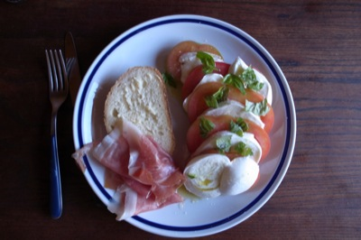

The Italian Stomach
Ever since I came to Italy I’ve been amazed at the capacity of the Italian stomach. And over the years I still haven’t figured it out: How do they fit all that food in? Where does it go? Yesterday I read this article in The American that illustrates the point nicely, so I’m not going to paraphrase. But it got me thinking, again, about the differences between American and Italian perspectives on food.
1. In Italy it is rare to hear a woman talk about what they’re not going to eat. Instead it is extremely common to overhear conversations in the streets of women talking about what they are going to eat, what they are going to cook, or what they ate last night. When I was in the States this past summer, I was around women who were constantly tallying what they put in their mouths. Denial creates desire. Moderation is smarter.
2. The food in the States relies on marketing to sell, instead of the food itself. I think Italians would be ashamed to persuade people to buy their food not through the quality of the product, but through its packaging. In the States one is assaulted by gimmicks to make eating “easier,” almost to convince us that we aren’t even eating. It’s a technicolor, neon rainbow walking through food aisles of supermarkets. One is assaulted by infinite variety, infinite choices.
3. The importance of dinner, or lunch. It is an event in the day, a time to slow down and enjoy, to look around and not keep plowing forward.

Oggi per pranzo: Caprese con mozzerella di bufala e pomodori tondi, prosciutto di Parma, e un pezzo di pane. Che buono!
4. Italian food revolves around a few traditional ingredients: salt and olive oil. Americans have a strange way of overloading the original taste of food so that it becomes tasteless. Or maybe, my taste buds are so persuaded to subtleties that anything much further beyond these basic flavors tastes like insult.
And so the closest I can get in argument for bottomless eating in Italy, is enjoyment. Italians enjoy what they eat. More than enjoy it. Watching a large round table of old men sit down to a four hour dinner, is watching edible happiness. They knock back glass after glass of wine between mouthfuls, pass the antipasti, dig into a spaghetti, slice up a steak and spoon in a tiramisu. Then there is coffee, followed by amaro, the final important step in Italian eating: digestion.
Commentary for The Italian Stomach
· · · · · · · · · · · · · · · · · · · ·
1 On Tuesday 27 September 2011 Simon Griffee wrote:
Mmmmmmmmmmmmmmmmm…
Antipasto: Fiori di zucca
Primo: Fettucini ai funghi porcini freschi
Secondo: Scamorza al ferro
Dolce: Mont blanc
Caffè
Ammazza caffè (Fernet Branca)
…Zzzzzzzz!